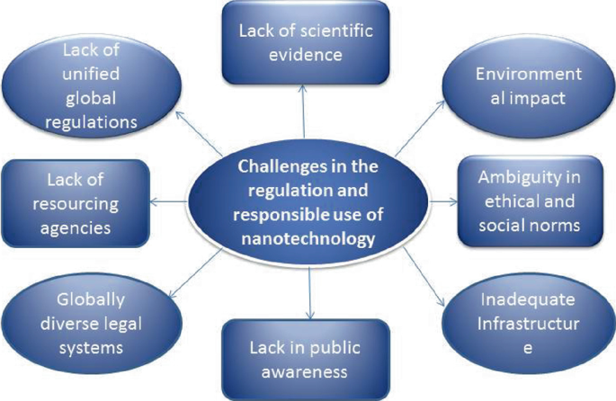
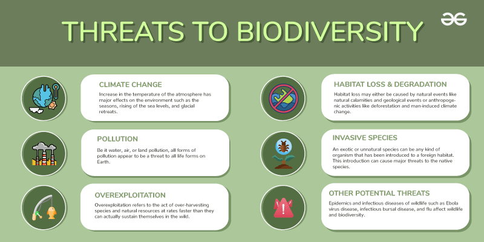
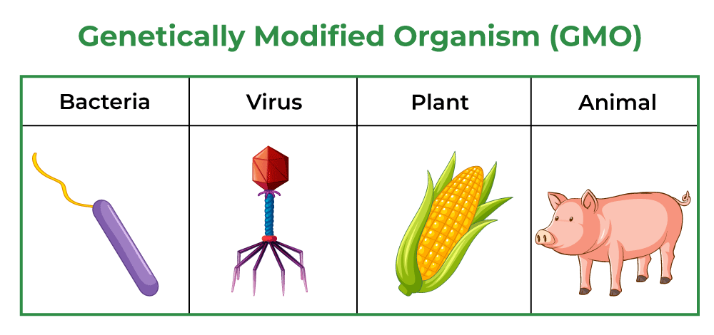
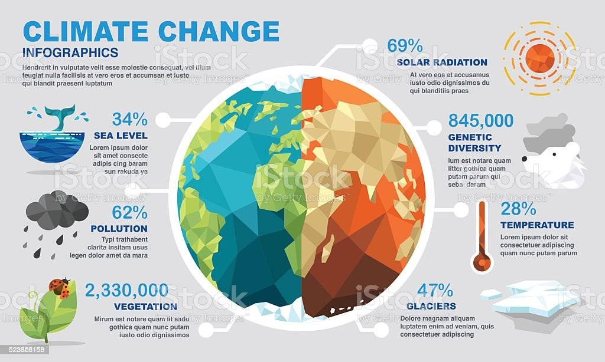
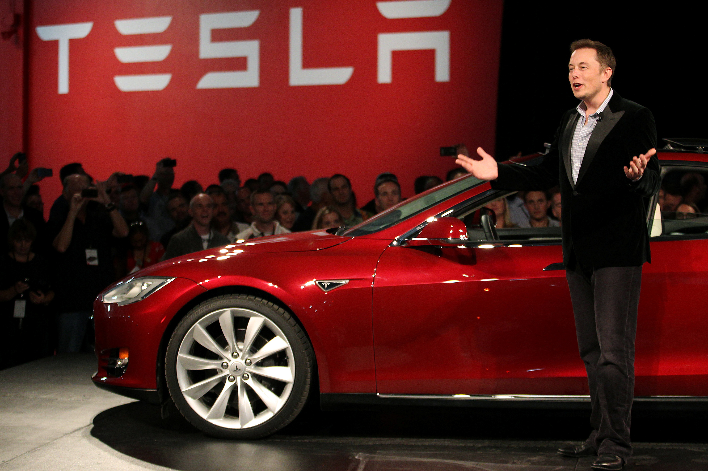
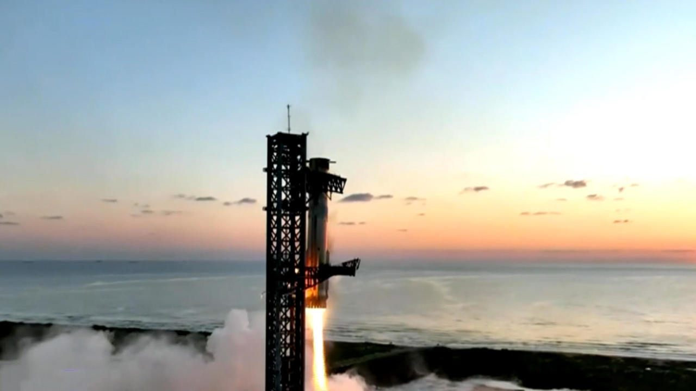

Nanotechnology
Refers to updates and developments related to the manipulation of matter at the nanoscale,
typically between 1 to 100 nanometers. This field encompasses innovations in materials science,
medicine, electronics, and environmental science.
News in this area highlights breakthroughs such as new applications for nanomaterials,
advancements in drug delivery systems, and ethical considerations regarding health and safety.
It aims to inform the public and policymakers about the potential benefits, risks,
and societal implications of nanotechnology,
fostering informed discussions about its role in shaping the future.

Biodiversity and the Healthy Society
covers developments and insights related to the variety of life on Earth and its critical role in
human well-being.
This includes the study of ecosystems, species conservation, and the interdependence between
biodiversity and public health.
News in this area highlights how the preservation of diverse ecosystems contributes to food
security, clean water,
and disease regulation, while also addressing the impacts of biodiversity loss on health and
livelihoods.
It aims to raise awareness about the importance of maintaining ecological balance and promoting
sustainable practices that benefit both the environment and society.

Genetically Modified Organisms
refers to updates and discussions surrounding organisms whose genetic material has been altered
through biotechnology for various purposes,
including agriculture, medicine, and research. This news covers advancements in genetic engineering
techniques,
such as CRISPR, the development of GMO crops that resist pests or tolerate harsh conditions,
and the implications for food security and environmental sustainability. It also addresses ethical
concerns,
regulatory debates, and public perceptions related to GMOs,
aiming to inform consumers and policymakers about the benefits and risks associated with these
innovations and their impact on health,
ecosystems, and global food systems.

Climate Change
encompasses the latest developments, research findings, and policy discussions related to the ongoing
changes in the Earth's climate due to human activities, particularly the increase in greenhouse gas
emissions.
This news covers a wide range of topics, including the effects of climate change on weather
patterns,
sea-level rise, and biodiversity, as well as mitigation strategies such as renewable energy adoption
and
carbon reduction initiatives. It highlights international agreements, such as the Paris Agreement,
and the role of
governments, businesses, and individuals in addressing this global challenge. The aim is to raise
awareness and
promote action towards a sustainable future, emphasizing the urgency of tackling climate change for
the health of
the planet and future generations.

Gene Therapy and Stem Cell
focuses on advancements in the medical fields of gene therapy and stem cell research,
which aim to treat or prevent diseases by modifying genetic material or utilizing stem cells for
regeneration. This news covers breakthroughs in techniques for delivering therapeutic genes,
developments in stem cell applications for conditions like spinal cord injuries and degenerative
diseases, and ethical considerations surrounding these technologies. It highlights clinical trials,
regulatory changes, and success stories of patients benefiting from these innovative treatments.
The aim is to inform the public and healthcare professionals about the potential of gene therapy and
stem cells to revolutionize medicine, improve patient outcomes, and address previously incurable
conditions.
Tesla - Driven by Innovation

Discover Tesla's groundbreaking advancements in electric vehicles and sustainable energy solutions,
created by Elon Musk.
Join us in the journey toward a cleaner, greener future. Stay informed about the latest innovations
and how you can be part of the change!
SpaceX pulls off unprecedented feat, grabs descending rocket with mechanical arms

The Starship upper stage, meanwhile, looped around the planet and re-entered the
atmosphere over the Indian Ocean as planned, enduring temperatures nearing 3,000
degrees as it descended to a controlled, on-target splashdown. The spacecraft came
through the hellish heat of re-entry in relatively good condition, protected by
improved heat-shield tiles and beefed-up steering fins that worked as needed while
engulfed in a fireball of atmospheric friction. But the jaw-dropping first stage
capture back at the launch pad, using pincer-like arms more familiarly known as
chopsticks, was the clear highlight of the giant rocket's fifth test flight.
Alexa AI
Alexa and other virtual assistants like Google Assistant and Apple’s Siri rely on artificial
intelligence, automation, and machine learning technologies to respond to user input and execute
commands.
Since 2018, machine learning has expanded Alexa's capabilities. For example, Alexa learned to carry
over
context from one query to the next and to register follow-up questions without requiring the user to
repeat the wake word. The platform also gained the ability to handle multiple requests
simultaneously
and allows users to access a skill (one of Alexa’s onboard apps) without needing to know its exact
name.
Editorial Staff
- Mark Anthony L. Siason - Editor-in-Chief
- Isaac Teves - Senior Writer
- Angela Mae Micabani - Research Analyst
- Vince Joseph Ruiz - Contributing Writer
- Mark Anthony L. Siason - Copy Editor
Subscribe to Our Newsletter